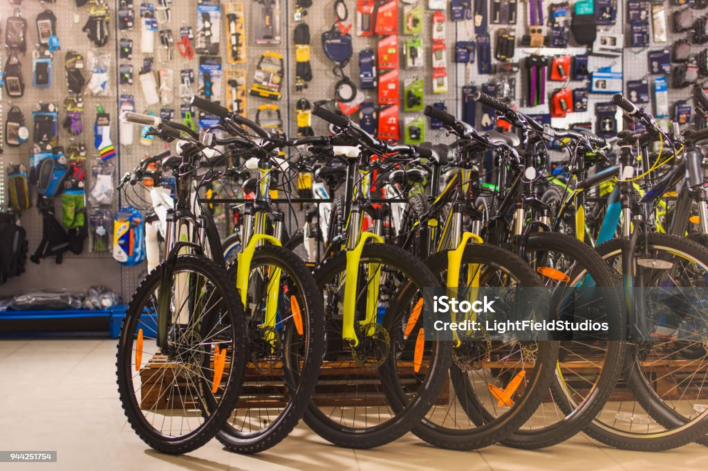
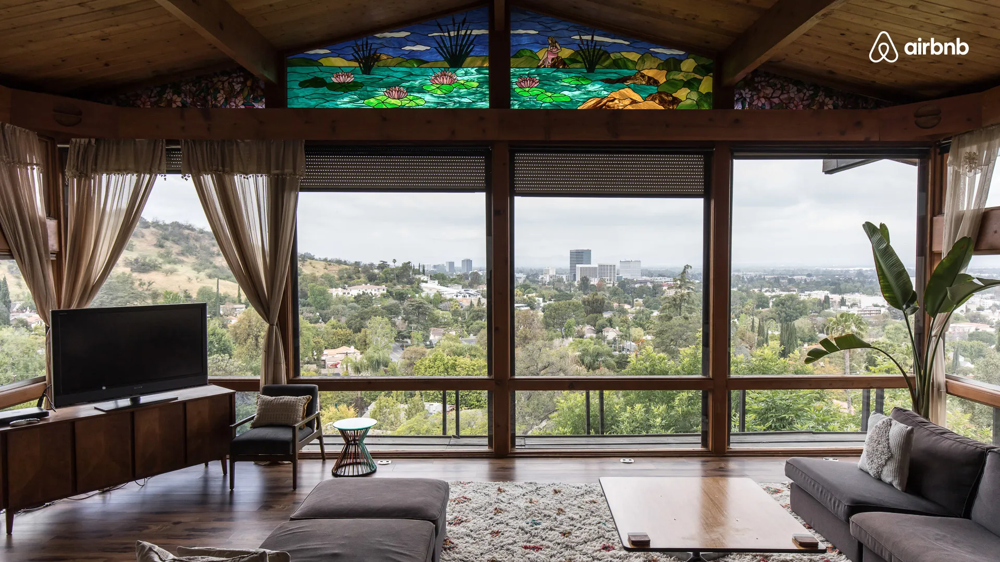

In this project I take row housing data and importing them to SQL server menagment to complete this project and
make it more usefull for analysis.Through SQL queries, I performed data cleaning, standardized date formats, addressed missing values, and transformed address-related fields for improved structure.
The process involved refining data integrity, resolving duplicates, and optimizing the dataset for comprehensive analysis.


I used Covid-19 death and vaccination row data that I transformed into SQL server to creat data analysing project.
I utilized SQL techniques, including temporary tables, views, and window functions, to derive meaningful insights and created a dynamic view for ongoing visualizations.

Downloaded a row bicycles selling xlsx file data set from the internet and using excel I made a project of it.
Cleaned the data set, created pivot tables using the data and created a dashboard to complete that project.

Used Airbnb data set from Karnal website and transformed it into Tableau public for analyzing data and creating dashboard for visualization.
Took real life data professionals survey from the internet where data describing which data professionals are happy with their work.
Transformed that data into power BI to create the project and a dashboard for visualization.

I utilized Python, BeautifulSoup, and requests to scrape real-time data from an Amazon product page, extracting information like title, rating, and date.
The data is stored and updated regularly in a CSV file for analysis.

I utilized Python to fetch real-time cryptocurrency data from CoinMarketCap API, extracted, and analyzed it using Pandas and Seaborn.
Visualized price changes and calculated the mean percentage changes for various time periods